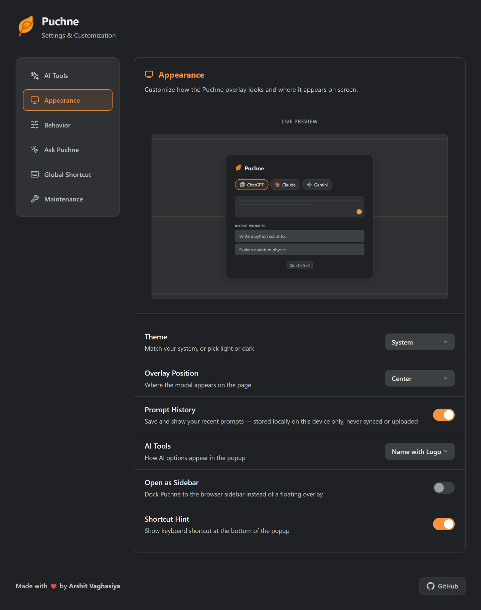
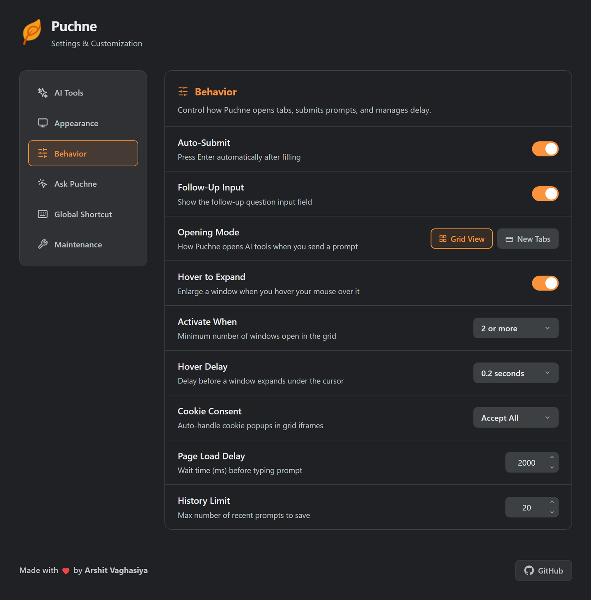
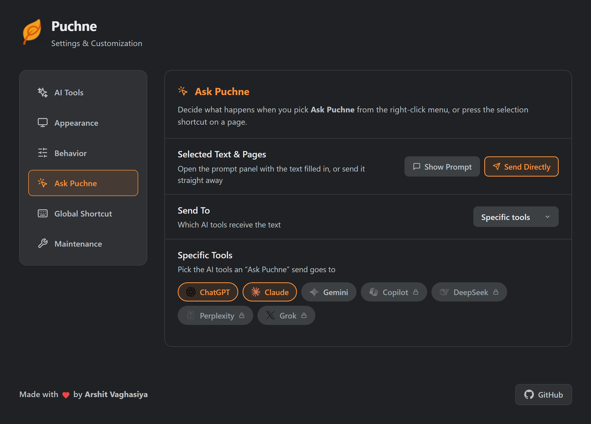

Reference
Every setting
Right-click the icon → Options. Changes save as you make them.
AI Tools
| Control | Does | Default |
|---|---|---|
| Tool toggle | Include it when multicasting | ChatGPT, Claude, Gemini on |
| Site access | Grant or withdraw that one site | Nothing granted |
| Selector editor | Override the input / button selector | As shipped |
| Test selectors | Check before you save | — |
| Add Custom AI Tool | Any chat UI, by URL + selector | None |
Walkthroughs: add a tool · fix a broken one.

Appearance
Live preview updates as you change it.
| Setting | Options | Default |
|---|---|---|
| Theme | System · Light · Dark | System |
| Overlay Position | Top · Center · Bottom | Center |
| Prompt History | On · Off | On |
| AI Tools (chips) | None · Logo · Name · Name + logo | Name + logo |
| Open as Sidebar | On · Off | Off |
| Shortcut Hint | On · Off | On |

Behavior
| Setting | Does | Options | Default |
|---|---|---|---|
| Auto-Submit | Presses Enter for you | On · Off | On |
| Follow-Up Input | Shows the follow-up box | On · Off | On |
| Opening Mode | One tab, or real tabs | Grid · New Tabs | Grid |
| Hover to Expand (grid) | Enlarge the column under the cursor | On · Off | On |
| Activate When (grid) | Windows needed before hover works | 2 · 3 · 4+ | 2+ |
| Hover Delay (grid) | Rest time before expanding | 0–2 s | 0.2 s |
| Cookie Consent (grid) | Banners inside grid frames | Accept · Reject · Off | Accept |
| Group Tabs (tabs) | One Chrome tab group per send | On · Off | Off |
| Cycle Tabs Once (tabs) | Visits each new tab, ends on the first | On · Off | Off |
| Page Load Delay | Head start for slow sites | 500–10 000 ms | 2 000 ms |
| History Limit | Recent prompts kept | 5–100 | 20 |
Slow connection? Raise Page Load Delay before calling a tool broken.
Tab still empty when you get to it? Some sites only start loading once their tab is viewed. Cycle Tabs Once wakes each one the moment it opens, before Puchne types, then returns you to the first.

Ask Puchne
| Setting | Options | Default |
|---|---|---|
| Selected Text & Pages | Show Prompt · Send Directly | Show Prompt |
| Send To | Enabled tools · Specific tools | Enabled tools |
| Specific Tools | Any of your tools | Empty |

Global Shortcuts
| Command | Suggested keys |
|---|---|
| Open Puchne Overlay | Ctrl + Shift + X |
| Ask about Selection / Page | Ctrl + Shift + S |
Chrome owns shortcuts — the button opens chrome://extensions/shortcuts. macOS uses Control.
Maintenance
| Button | Does |
|---|---|
| Clear History | Deletes saved prompts. Settings untouched |
| Reset All | Defaults everywhere + clears history. Custom tools and overrides go too |
Reset All doesn't revoke site permissions. Those are Chrome's — withdraw per tool, or remove the extension.
Where it's stored
| Data | Storage | Leaves the device? |
|---|---|---|
| Settings, custom tools, overrides | Chrome sync storage | Only via your own Chrome sync |
| Recent prompts | Local storage | No |
| Site permissions | Chrome | No |
No Puchne account, no Puchne server. Privacy →